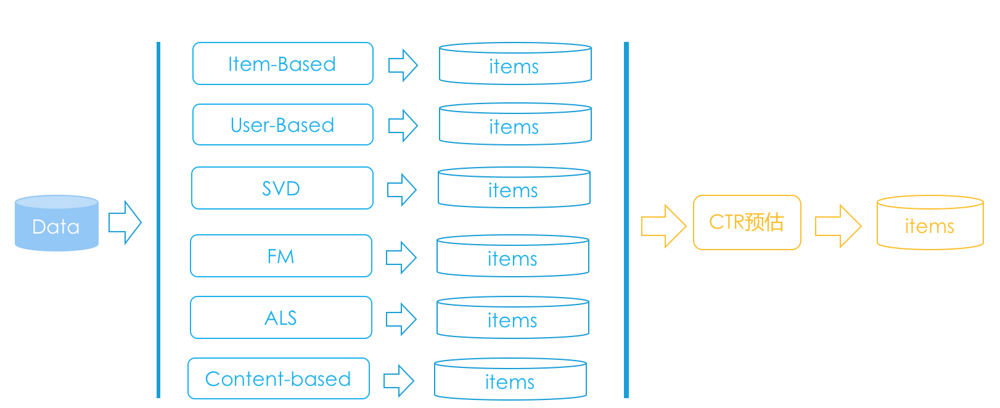
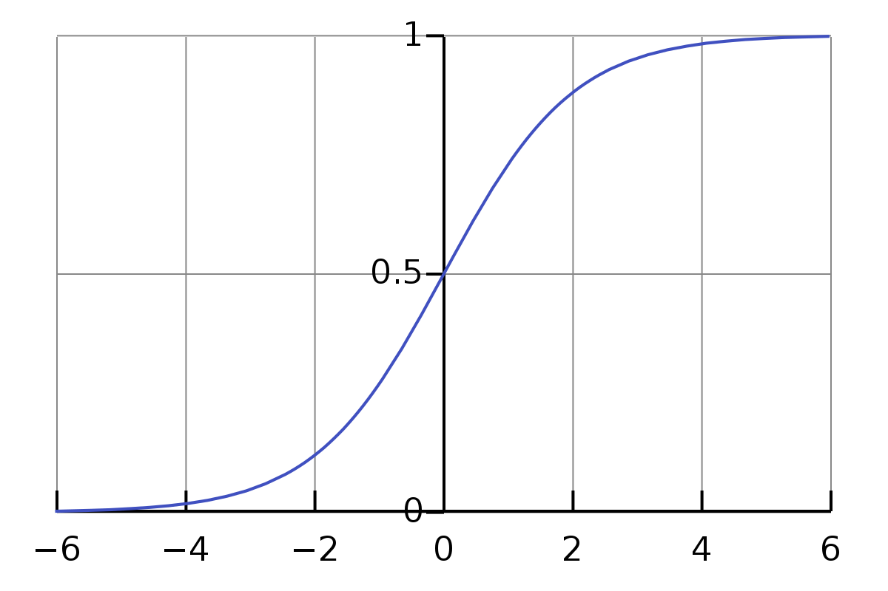
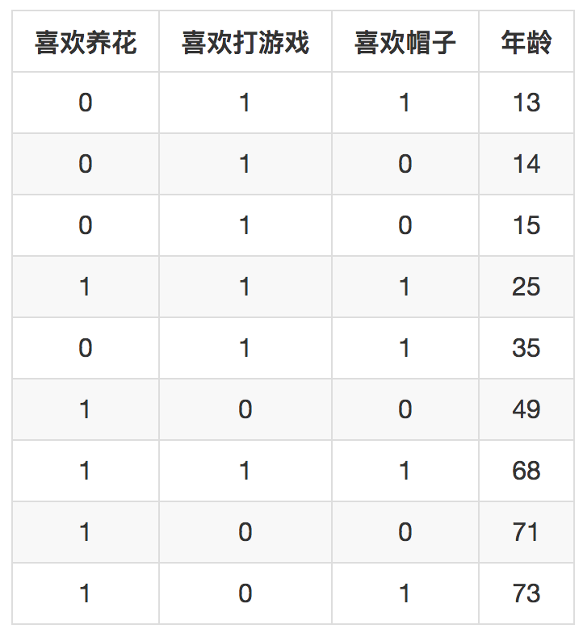
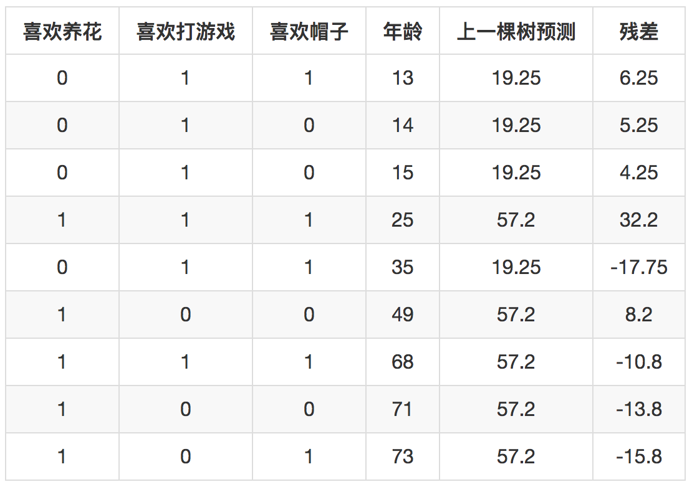
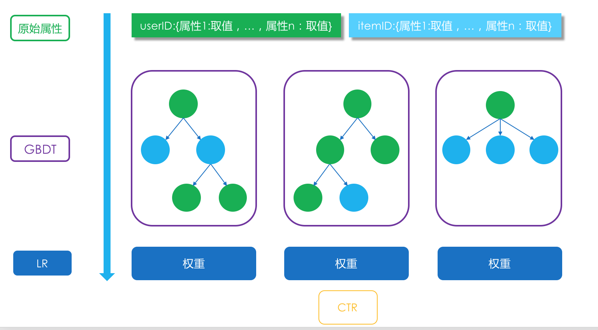

- 00 开篇词 用知识去对抗技术不平等.md.html
- 01 你真的需要个性化推荐系统吗_.md.html
- 02 个性化推荐系统有哪些绕不开的经典问题？.md.html
- 03 这些你必须应该具备的思维模式.md.html
- 04 画鬼容易画人难：用户画像的“能”和“不能”.md.html
- 05 从文本到用户画像有多远.md.html
- 06 超越标签的内容推荐系统.md.html
- 07 人以群分，你是什么人就看到什么世界.md.html
- 08 解密“看了又看”和“买了又买”.md.html
- 09 协同过滤中的相似度计算方法有哪些.md.html
- 10 那些在Netflix Prize中大放异彩的推荐算法.md.html
- 11 Facebook是怎么为十亿人互相推荐好友的.md.html
- 12 如果关注排序效果，那么这个模型可以帮到你.md.html
- 13 经典模型融合办法：线性模型和树模型的组合拳.md.html
- 14 一网打尽协同过滤、矩阵分解和线性模型.md.html
- 15 深度和宽度兼具的融合模型 Wide and Deep.md.html
- 16 简单却有效的Bandit算法.md.html
- 17 结合上下文信息的Bandit算法.md.html
- 18 如何将Bandit算法与协同过滤结合使用.md.html
- 19 深度学习在推荐系统中的应用有哪些_.md.html
- 20 用RNN构建个性化音乐播单.md.html
- 21 构建一个科学的排行榜体系.md.html
- 22 实用的加权采样算法.md.html
- 23 推荐候选池的去重策略.md.html
- 24 典型的信息流架构是什么样的.md.html
- 25 Netflix个性化推荐架构.md.html
- 26 总览推荐架构和搜索、广告的关系.md.html
- 27 巧妇难为无米之炊：数据采集关键要素.md.html
- 28 让你的推荐系统反应更快：实时推荐.md.html
- 29 让数据驱动落地，你需要一个实验平台.md.html
- 30 推荐系统服务化、存储选型及API设计.md.html
- 31 推荐系统的测试方法及常用指标介绍.md.html
- 32 道高一尺魔高一丈：推荐系统的攻防.md.html
- 33 和推荐系统有关的开源工具及框架介绍.md.html
- 34 推荐系统在互联网产品商业链条中的地位.md.html
- 35 说说信息流的前世今生.md.html
- 36 组建推荐团队及工程师的学习路径.md.html
- 加餐 推荐系统的参考阅读.md.html
- 结束语 遇“荐”之后，江湖再见.md.html
- 捐赠
13 经典模型融合办法：线性模型和树模型的组合拳
推荐系统在技术实现上一般划分为三个阶段：挖掘、召回、排序。
为什么要融合？
挖掘的工作就是对用户和物品做非常深入的结构化分析，庖丁解牛一样，各个角度各个层面的特征都被呈现出来，并且建好索引，供召回阶段使用，大部分挖掘工作都是离线进行的。
接下来就是召回，为什么会有召回？因为物品太多了，每次给一个用户计算推荐结果时，如果对全部物品挨个计算，那将是一场灾难，取而代之的是用一些手段从全量的物品中筛选出一部分比较靠谱的。
最后就是排序，针对筛选出的一部分靠谱的做一个统一的论资排辈，最后这个统一的排序就是今天要讲的主题：融合。
前面巴拉巴拉说了一段，画成图的话会好理解一些，示意图如下。

为什么要融合呢？这还得倒回去说一说召回是什么，以及这个阶段到底发生了什么？
在召回阶段，其实就是各种简单的、复杂的推荐算法，比如说基于内容的推荐，会产生一些推荐结果，比如基于物品的协同过滤会产生一些结果，矩阵分解会产生一些结果，等等。
总之，每种算法都会产生一批推荐结果，一般同时还附带给每个结果产生一个推荐分数，是各自算法给出来的。
于是问题就来了，这些不同算法产生的推荐分数，最后要一起排个先后，难道依据各自的分数吗？
这样是不行的，为什么？有几个原因：
- 有个算法可能只给出结果，不给分数，比如用决策树产生一些推荐结果；
- 每种算法给出结果时如果有分数，分数的范围不一定一样，所以不能互相比较，大家各自家庭背景不一样；
- 即使强行把所有分数都归一化，仍然不能互相比较，因为产生的机制不同，有的可能普遍偏高，有的可能普遍偏低。
既然来自各个地方的状元凑在一起，谁也不服谁，那只能再举行一次入学考试了，这个入学考试就是融合模型。也就是，不同算法只负责推举出候选结果，真正最终是否推荐给用户，由另一个统一的模型说了算，这个就叫做模型的融合。
模型融合的作用除了统一地方军阀，还有集中提升效果的作用。在机器学习中，有专门为融合而生的集成学习思想。
今天要讲的一个典型的模型融合方案是：逻辑回归和梯度提升决策树组合，我可以给它取个名字叫做“辑度组合”。
“辑度组合”原理
在推荐系统的模型融合阶段，就要以产品目标为导向。举个简单的例子，信息流推荐，如果以提高CTR为目标，则融合模型就要把预估CTR作为本职工作，这个工作谁最能胜任呢，一直以来就是逻辑回归。
下面，我就来简单介绍一些常见的逻辑回归。
逻辑回归
CTR预估就是在推荐一个物品之前，预估一下用户点击它的概率有多大，再根据这个预估的点击率对物品排序输出。
逻辑回归常常被选来执行这个任务，它的输出值范围就是0到1之间，刚好满足点击率预估的输出，这是一个基础。因为逻辑回归是广义线性模型，相比于传统线性模型，在线性模型基础上增加了sigmoid函数。
下面就简单说说，逻辑回归如何做CTR预估？
我还是按照一直以来的套路来讲，先讲它在真正使用时怎么做的，再一步步往回看怎么得到所需要的条件。
在对召回阶段不同算法给出的候选物品计算CTR预估时，需要两个东西：
- 特征；
- 权重。
第一个是特征，就是用量化、向量的方式把一个用户和一个物品的成对组合表示出来。这里说的量化方式包括两种：实数和布尔。实数好理解，比如一个用户的年龄，一个用户平均在某个品类上每个月的开销，类似等等。
布尔，就是取值0或者1，针对两种类别形式的，比如用户所在的省、市，当时是白天还是晚上，物品的每一个标签。
用户和每一个候选物品都组一下CP，然后以这种特征化的方式表达出来，就可以计算了，否则类别形式的字段不能直接参与计算。
第二个是权重，每个特征都有一个权重，权重就是特征的话事权。在这场决定哪些物品最终有机会能走到前台的选秀过程中，用户和物品这对CP的所有特征都有投票权，只是同人不同命，每个特征的权重不一样，对最终计算CTR影响有大有小。
这个权重就很重要了，显然不能由愚蠢的人类来指定，需要模型自主从大量的历史数据中学习得到。
有了特征，它是一个向量，假如把它叫做x；还有特征的权重，也是一个维度和特征一样的向量，假如叫做w。
我们通过对x和w做点积计算，就得到了一个传统线性模型的输出，再用sigmoid函数对这个值做一个变换，就得到一个0到1之间的值，也就是预估的CTR。
这里所说的sigmoid函数长这个样子：
\[\\sigma(w\\times{x}) = \\frac{1}{1+e^{-w\\times{x}}}\]
这个函数曲线如图所示。

那看上去其实要做的就是两件事了：搞特征、学权重。
事实上的确如此，甚至前者占据更多的时间。逻辑回归特特征的取值都要求要在0到1之间。
甚至在一些领域，比如搜索广告，特征全都是布尔取值，只有出现和不出现两种，一旦遇到实数取值的特征，就将它划分成多个区间段，也变成了布尔取值。
除此之外，由于逻辑回归是广义线性模型，所谓广义就是因为加了sigmoid函数，所以很多非线性关系它无能为力。
比如说，有一天你发现“ID为233的用户喜欢买各种钢笔”这个事实，它可以有两个特征组合出来，一个是“ID为233”，是一个布尔特征，另一个是“物品为钢笔”，也是一个布尔特征，显然构造一个新特征，叫做“ID为233且物品为钢笔”。
只有两个原始特征都取值为1时，这个构造出的特征才会取值为1，这种组合就是非线性，逻辑回归本身对两个原始特征仅仅是线性加权，并不能很好地刻画这个组合关系，非得组合才能助它一臂之力。
类似这样的工作，行话都叫做特征工程，刚才举例所说的特征组合叫做二阶组合，还有三阶组合，只要你高兴，也没人拦着你搞四阶组合。
但是要注意，特征组合的难点在于：组合数目非常庞大，而且并不是所有组合都有效，只有少数组合有效。
需要不断去弄脏双手，脚上沾泥地从数据中发现新的、有效的特征及特征组合。
特征工程+线性模型，是模型融合、CTR预估等居家旅行必备。
权重那部分就是老生常谈了，简单说就是你准备好样本，喂给优化算法，优化算法再挤出新鲜的权重。
权重的学习主要看两个方面：损失函数的最小化，就是模型的偏差是否足够小；另一个就是模型的正则化，就是看模型的方差是否足够小；都是希望模型能够有足够的生命力，在实际生产线上最好能和实验阶段表现一样好。
除了要学习出偏差和方差都较小的模型，还需要能够给工程上留出很多余地，具体来说就是两点，一个是希望越多权重为0越好，权重为0称之为稀疏，可以减小很多计算复杂度，并且模型更简单，方差那部分会可控。
另一个是希望能够在线学习这些权重，用户源源不断贡献他们的行为，后台就会源源不断地更新权重，这样才能实现生命的大和谐。
要学习逻辑回归的权重，经典的方法如梯度下降一类，尤其是随机梯度下降，这在前面讲矩阵分解时已经提到过，可以实现在实时数据流情形下，更新逻辑回归的权重，每一个样本更新一次。
但是随机梯度下降常被人诟病的是，它什么也表现不好，很难得到稀疏的模型，效果收敛得也很慢。
也就是模型预测结果在通往真正想要到达的靶心路上看上去像是喝醉了酒一样，歪歪斜斜，像是很随机，但是趋势上还是在朝损失函数下降的方向。
后来Google在2013年KDD上发表了新的学习算法：FTRL，一种结合了L1正则和L2正则的在线优化算法，现在各家公司都采用了这个算法。
这里也顺便提一句，这个专栏重点讲解的是推荐系统落地会用到的东西，尽量通俗易懂。如果深入到机器学习和人工智能其他分支，可以参考极客时间上洪亮劼老师的“AI技术内参”专栏。
对于我给你讲过的原理，希望可以让你有个直观的理解，在专栏结束后的图书出版计划中，我会在书中更加细致深入地讲原理，就有更多的代码和公式。
梯度提升决策树GBDT
前面提到，特征组合又能有效表达出数据中的非线性事实，但是发现成本却很高，需要花大量的人力和物力，那么有没有算法能够在这个阶段帮助到你呢？
答案是，有！就是用树模型。
树模型，可以理解为苏格拉底式的诘问，想象不断对一个样本提问：是男用户吗？是的话再问：是北上广的用户吗？不是的话则可以问：是月收入小于5000的用户吗？
这种不断提问按照层级组织起来，每次回答答案不同后再提出不同的问题，直到最后得出最终答案：用户对这个推荐会满意吗？
这就是树模型。树模型天然就可以肩负起特征组合的任务，从第一个问题开始，也就是树的根节点，到最后得到答案，也就是叶子节点，这一条路径下来就是若干个特征的组合。
树模型最原始的是决策树，简称DT，先驱们常常发现，把“多个表现”略好于“随机乱猜”的模型以某种方式集成在一起往往出奇效，所以就有树模型的集成模型。最常见的就是随机森林，简称RF，和梯度提升决策树，简称GBDT。
先讲一下剃度提升决策树的原理。按照其名字，我把它分成两部分：一个是GB，一个是DT。GB是得到集成模型的方案，沿着残差梯度下降的方向构建新的子模型，而DT就是指构建的子模型要用的决策树。
梯度提升决策树其实本意是用来做回归问题的，怎么回事呢？
举个例子好了。假如这里有以下这么几条样本。

现在有个任务是根据是否喜欢养花，喜欢打游戏，喜欢帽子来预测年龄，模型就是梯度提升决策树GBDT。假设我们设定好每个子树只有一层，那么三个特征各自按照取值都可以构成两分支的小树枝。
树根节点为：是否喜欢养花，左分支就是不喜欢，被划分进去的样本有13、14、15，35这四个年龄；右边的就是样本25、49、68、71、73。左边的样本均值是19.25，右边的样本均值是57.2。
树根节点为：是否喜欢打游戏，左分支是不喜欢，被划分进去就有49，71，73；右边是喜欢，被划分进去的样本有13、14、15、25、35、68。左边的均值是64，右边的均值是28.3。
树根节点为：是否喜欢帽子，左分支是不喜欢，被划分进去就有14、15、49、71；右边是喜欢，右边是13、25、35、68、73，左边均值是37.25，右边是42.8。
叶子节点上都是被划分进去的样本年龄均值，也就是预测值。这里是看哪棵树让残差减小最多，分别拿三个方案去预测每个样本，统计累积的误差平方和，三个分别是1993.55、2602、5007.95，于是显然第一棵树的预测结果较好，所以GBDT中第一棵树胜出。
接下来第二棵树如何生成呢？这里就体现出GBDT和其他提升算法的不同之处了，比如和Ada boost算法不同之处，GBDT用上一棵树去预测所有样本，得到每一个样本的残差，下一棵树不是去拟合样本的目标值，而是去拟合上一棵树的残差。这里，就是去拟合下面这个表格。

新一轮构建树的过程以最后一列残差为目标。构建过程这里不再赘述，得到第二棵树。如此不断在上一次建树的残差基础上构建新树，直到满足条件后停止。
在得到所有这些树后，真正使用时，是将它们的预测结果相加作为最终输出结果。这就是GBDT的简单举例。
这里有两个问题。
第一个，既然是用来做回归的，上面这个例子也是回归问题，如何把它用来做分类呢？那就是把损失函数从上面的误差平方和换成适合分类的损失函数，例如对数损失函数。
更新时按照梯度方向即可，上面的误差平方和的梯度就刚好是残差。对于CTR预估这样的二分类任务，可以将损失函数定义为：
\[-ylog§ - (1-y)log(1-p)\]
第二个，通常还需要考虑防止过拟合，也就是损失函数汇总需要增加正则项，正则化的方法一般是：限定总的树个数、树的深度、以及叶子节点的权重大小。
第三个，构建每一棵树时如果遇到实数值的特征，还需要将其分裂成若干区间，分裂指标有很多，可以参考xgboost中的计算分裂点收益，也可以参考决策树所用的信息增益。
二者结合
前面介绍了逻辑回归LR，以及剃度提升决策树GBDT的原理。实际上可以将两者结合在一起，用于做模型融合阶段的CTR预估。这是Facebook在其广告系统中使用的方法，其中GBDT的任务就是产生高阶特征组合。
具体的做法是：GBDT产生了N棵树，一条样本来了后，在每一棵树上都会从根节点走到叶子节点，到了叶子节点后，就是1或者0，点或者不点。把每一棵树的输出看成是一个组合特征，取值为0或者1，一共N棵树，每棵树i有 \(M_i\) 个叶子就相当于有M种组合，一棵树对应一个one-hot（独热）编码方式，一共就有\(\\sum_{i=1}^{N}{M_i}\)个维度的新特征，作为输入向量进入LR模型，输出最终的结果。
示意图如下。

每一条样本，样本内容一般是把用户、物品、场景三类特征拼接在一起，先经过N棵GBDT树各自预测一下，给出自己的0或者1的预测结果，接着，这个N个预测结果再作为N个one-hot编码特征拼接成一个向量送入逻辑回归中，产生最终的融合预估结果。
另外，由于两者结合后用来做推荐系统的模型融合，所以也可以考虑在输入特征中加入各个召回模型产生的分数，也许会有用。
以上就是咱们的“辑度组合”原理，虽然简单，但在实际应用中非常的有效。
总结
今天我主要讲了简单的逻辑回归和梯度提升决策树，两者都是不太复杂的模型。并且无论是逻辑回归，还是梯度提升决策树，都有非常成熟的开源实现，可以很快落地。
由于篇幅限制，在梯度提升决策树那部分有一些细节被我略过了，你能自己手算出例子中的第二棵树是什么样的吗？欢迎留言一起讨论。感谢你的收听，我们下期再见。

© 2019 - 2023 Liangliang Lee. Powered by gin and hexo-theme-book.